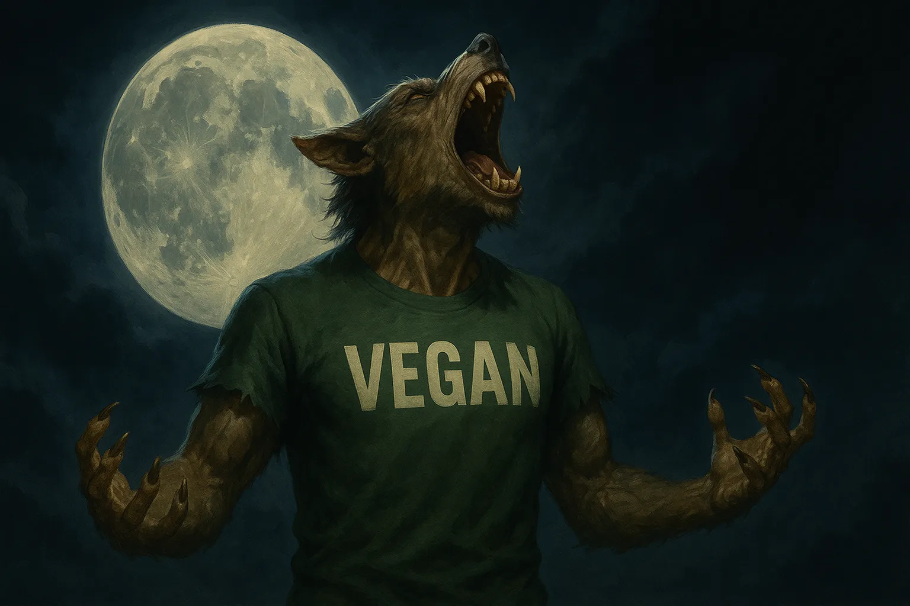

Best Time to Take Vegan Protein for Best Results
Sports science no longer treats protein timing as bro-lore; it’s mapped in journals and tracer studies. The big picture is that total daily grams rule hypertrophy, yet certain clocks still give you extra bang for each scoop. A 2013 meta-analysis found volume of protein predicted muscle growth better than a rigid sixty-minute “anabolic window,” but subjects who took protein within two hours of lifting saw slightly larger strength gains, hinting that convenience and compliance matter too. *
The International Society of Sports Nutrition sums it up this way: hit 0.25–0.40 g protein per kg every three to four hours and you’ll keep muscle protein synthesis humming all day. Their 2017 position stand adds that pre- or post-workout shakes work equally well because exercise stays anabolic for at least twenty-four hours. *
Distribution also matters. Researchers who split daily protein evenly across breakfast, lunch, and dinner measured a twenty-five-percent higher twenty-four-hour synthesis rate than the same protein skewed toward dinner. *
Nighttime is the new frontier. A 2020 trial fed middle-aged men forty grams of a pea-rice blend thirty minutes before sleep for three nights after eccentric leg work; soreness and creatine kinase tracked the same recovery as whey, showing plants can handle the graveyard shift. *
Put that data to work like this. Take a fast-digesting shake around your workout window, space meals so each lands twenty to forty grams of protein, and cap the day with a slow-release slug if you’re in a mass phase or training twice daily.
- Orgain Organic Plant-Based Protein Powder: 21 g pea-rice protein + 5 g fiber — ideal with morning oats to front-load synthesis.
- Vega Sport Premium Protein: 30 g protein + 5 g BCAAs; mix it within two hours post-lift to bank a third of a 90 kg athlete’s daily quota.
- Sunwarrior Warrior Blend: hemp-pea blend, 18 g protein + 2 g carbs; perfect mid-afternoon iced coffee top-up.
- Naked Pea Protein: 27 g single-ingredient isolate; add 3 g standalone leucine before bed to mimic casein’s slow release.
- KOS Organic Plant Protein: coconut milk + monk fruit for a dessert-like pre-sleep shake.
Bottom line: Hit 1.6–2.0 g/kg body weight, split into 4–5 evenly spaced doses, include one around your workout, and add a 20–40 g pre-sleep shake during heavy phases. Intake builds the statue; timing polishes the edges.